After doing all your basic profile settings done, it’s time to move onto the more exhilarating and creative fragments of your YT profile. One of the superlative ways to get started with customising your channel is to set a virtuous icon or YouTube channel logo.
An eye-catchy YT icon helps a lot to build a brand through which you can straightforwardly promote your cause and people can remember your profile through that small graphic illustration.
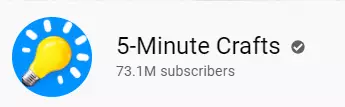
Over 38 million YouTube channels have been produced. Out of those 38 million+ channels, 230,000 YT profiles have more than 100,000 subscribers, 22,000 profiles have more than 1 million subscribers and 700 YouTube channels have more than 10 million subscribers.
Amongst them, the most widespread beauty and style channels on YT as of January 2021 include Yuya (24.5 million subscribers), Jefreestar (16.7 million subscribers), and Musas (15 million subscribers)
As, YouTube is most useful for the makeup, merchandizing, and products industry, these video types statistically get extraordinary engagement.
But do you know, what makes these profiles gain this level popularity?
Recognition with proper branding. If they might not have set a distinguishing YouTube channel logo, their page too might have end up getting lost in the ocean of content.
With engaging content and a strong strategy, businesses from every industry can convert the platform’s users into clients
A profile picture builds differentiation, that is it help the creators recognize the page and thereby build their subscriber base, for which many creators buy YouTube subscribers from legitimate service providers.
“A great channel branding is the key to start successful channel on YouTube”
Contents
- 1. What Is a Channel Icon?
- 2. Where does your YT profile picture or icon appears?
- 3. Why Is Your Channel Icon Important?
- 4. What should your YouTube channel logo or icon be?
- 5. How to add a YouTube channel logo or Icon?
- 6. What to Know About YouTube profile Icon?
- 7. Best practices
- 8. Browse Free Logo Templates Online
- 9. Branding
- 10. How to create logo for YouTube channel using logaster?
What Is a Channel Icon?
A Channel Icon is a small, graphic representation of your profile on YT and in Google that is used to identify your page, appearing customarily on the YT search area.
Your YT profile picture can attract the target audience to your page and will ordinarily be the first thing that your viewers see on your page. It is occasionally also known as your ‘Profile Picture’ as the YT icon features conspicuously beneath all of your videos next to your channel name.
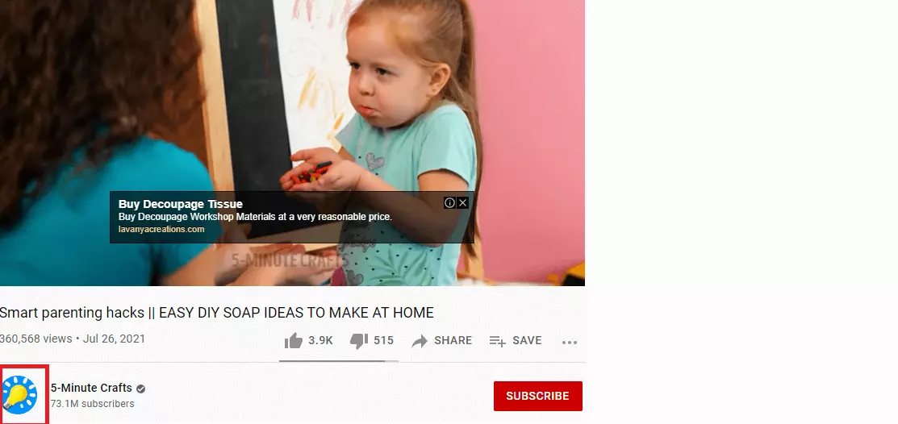
We all love brands. We fall for things that have divergent physiognomies. Over 40 percent of respondents believe that an effective icon is one that conjures direct connotations with the industry in which you’re involved.
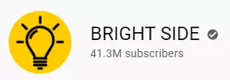
An eye-catching profile picture, along with an associated YT icon, brings a higher click-through rate, rankings, more subscribers and engagements.
For which millions of creators buy YouTube likes and buy YouTube comments.
Where does your YT profile picture or icon appears?
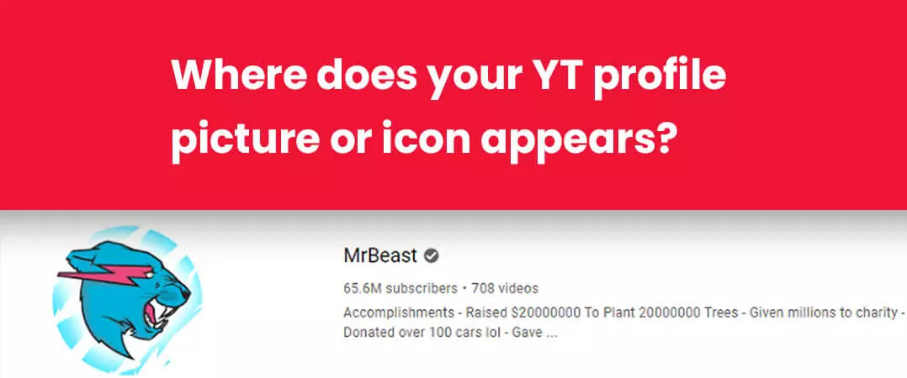
Your YT icon appears in more dwellings on the site than any other component of your page.
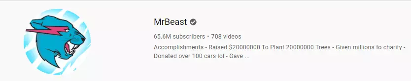
It appears in the following places:
- Watch pages
- Subscriptions
- Featured channels
- Related channels
- Search results
- Your Channel Page
- Video comments
- Community tab
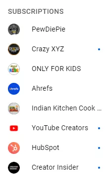
When you leave a comment on a video, your YT profile picture shows up right next to it:
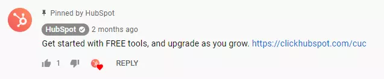
Why Is Your Channel Icon Important?
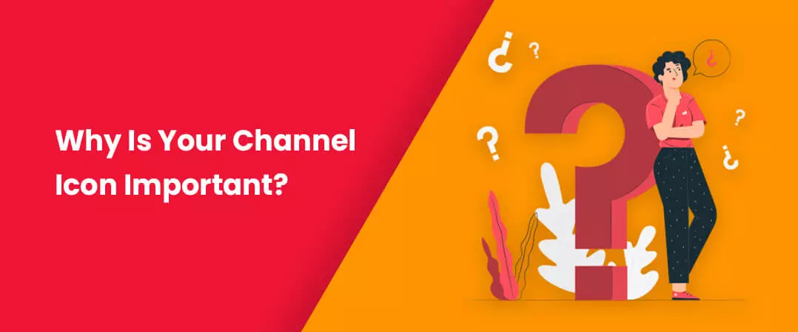
Attract target audience
In addition to your content and branding, the YouTube channel logo is additional significant trick that you can acclimate to attract the audience.
It is fundamental for the reason that it assists you in the distinction of your page from the competitors in your niche available on YT.
Give your YT page a professional look
If your icon is next of kin to the YT profile picture then it springs a more candid and professional look. Getting a professional-looking icon attracts the viewers that you mean business.
More subscribers
Distinguishing your page from the others can be decisive in winning the battle for subscribers.
What should your YouTube channel logo or icon be?
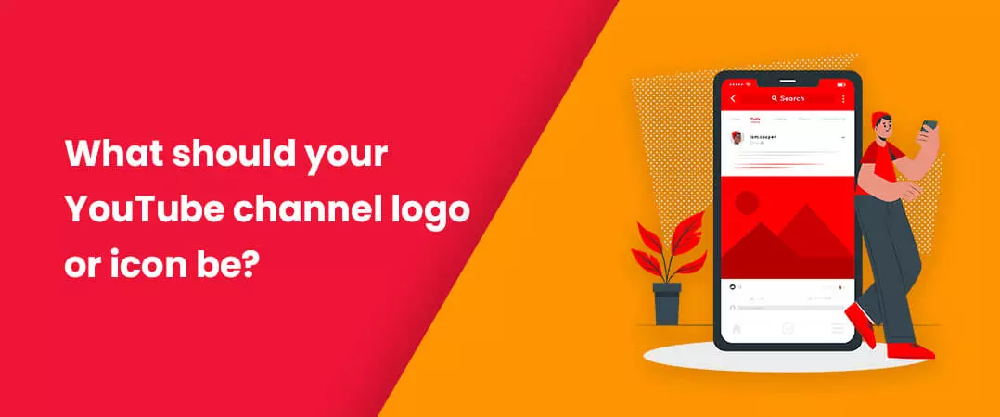
To bring the target audience to your page, it is imperative that the visual aspects catch their eyes. You chose the best YT icon from numerous YouTube channel logo ideas that hit your brain instantly.
Remember, it’s tremendously important to have a good icon that looks professional and reflects the content on your page. Nevertheless, what you want it to be is entirely up to you.
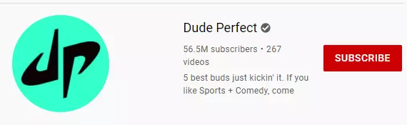
It can be somewhat as simple as a photo taken by your web cam or otherwise a screenshot from one of your videos. If you have a brand logo, you must certainly go with that as long as it’s flawless what it is when it’s reduced to a small size as that’s how your icon will usually be viewed.
Whatever you pick make sure it doesn’t contain anything incongruous that violates YT’s terms of policies else you’ll run the risk of getting your profile suspended.
Once you’ve elected the image you want to use then it’s time to upload it to your account.
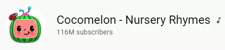
How to add a YouTube channel logo or Icon?
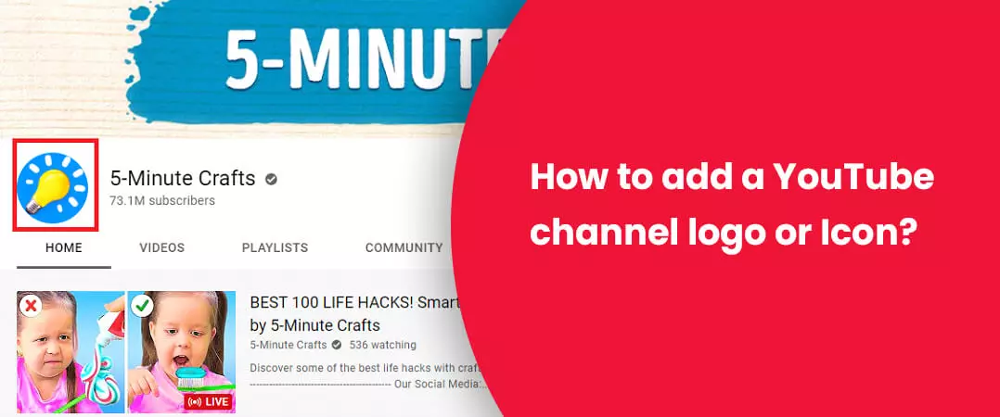
- Click on the user or profile icon in the top right-hand corner of your account on YouTube.com
- Click on the ‘Your Channel’ option from the drop-down menu and your channel overview page will appear
- Then select the large blue ‘Customise Channel’ button
- Hover over your YT icon and tap the pencil that appears in the top right-hand corner
- You will see a box notifying that it may take a few minutes to change your profile picture. Next, click edit
- Upload your selected image from your computer
- Click done once you’re satisfied with your choice
If you want to change profile picture, it's comparatively simple to do on your desktop, but a slight tricky to do on a mobile device. Let’s walk through both possibilities.
How to change YouTube channel logo on PC?
- Log in to YouTube, click on your profile picture to access your Channel page
- Click on your YT icon and ‘Edit’
- Select your new profile image and upload
How to change YouTube channel logo on android
On mobile devices only, YT influences more adults aged 18-49 during prime time than any cable network does in an average week.
75% of adults report watching YouTube on their mobile devices.
And more than 70% of YT watch time (Source-) is generated from mobile devices.
You can follow these steps to design your own logo using a mobile:
- From the YouTube app, click on your profile picture then tap on ‘Help and Feedback’
- The ‘About Me’ section will open and give you entree to your profile image
- Next, you will arrive at the about me section, where you can tap on your profile picture and change it.
What to Know About YouTube profile Icon?
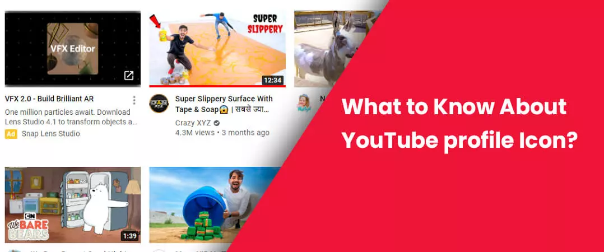
YT is objectively substantial in what type of images they will allow. That embraces jpgs, bmps, pngs, and, even gifs, though they will not be animated.
Around 4 out of 5 users watch video content at least sporadically based on what the platform recommends in the sidebar.
The image can be up to 800 pixels by 800 pixels, which is great, but be sure that you're likely going to see this as a little circle on most YT’s screens. So, keep it moderately simple.
Providing your profile picture gets featured on the [FEATURED CHANNELS] and [RELATED CHANNELS] from other channels, you are conceivable to steal" a number of audiences from these pages by a persuasive YT icon. As it is applied to characterize your services.
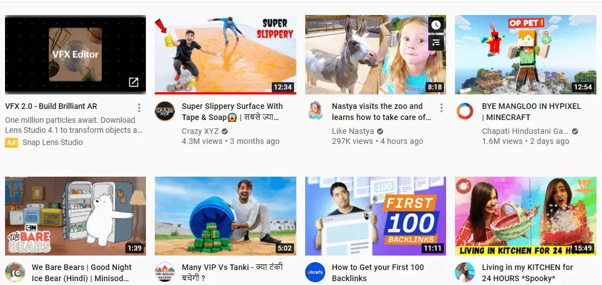
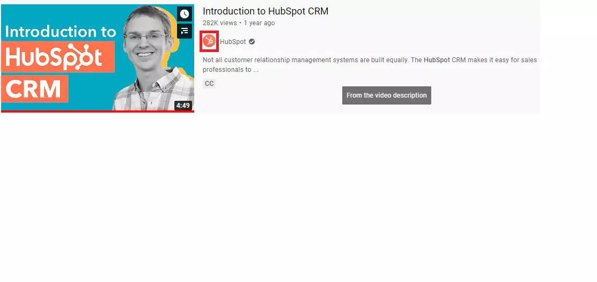
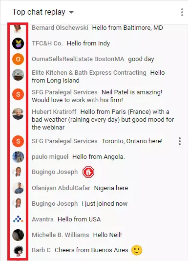
Best practices
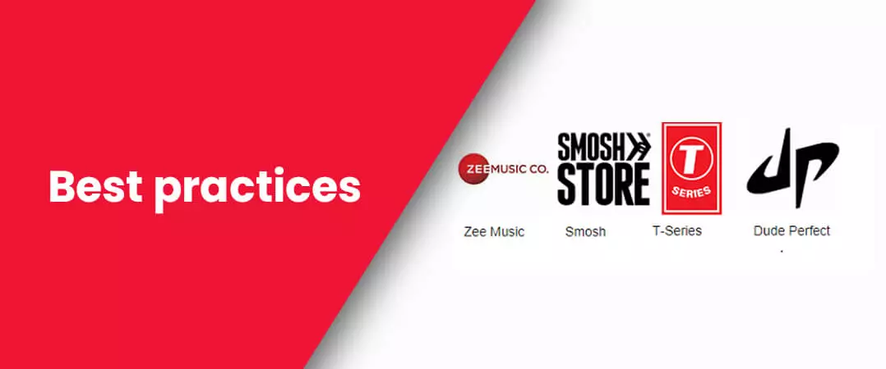
Do research and Learn from Amazing Icons
We can classify Icons into 5 categories:
i. Abstract Icon-
Profiles that "think beyond the box", have good ideas, etc.
ii. Figure Icon-
Channels for fitness, body builder, make-up, food, kids, game, etc.
iii. Pixel art Icon-
Gaming channels
iv. Text Icon-
Art of using simple texts and simple graphics. Any creator can use them, but keep it short.
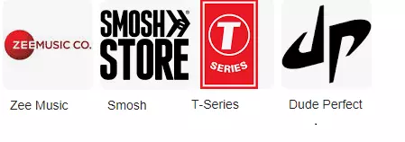
v. Combination logo-
Any channels can use, but don't make it too multifaceted, etc.
The objectives of these YT profile pictures or designs are to catch watchers' eyes and instantaneously bring audiences a revelation of what this page is all about.
Remember, a successful profile picture needs to be striking and symbolic.
If you run a cooking channel, there really is no logic to use a ‘’make-up brush for your logo. In its place, you need to go with something more appropriate, such as a food item, for example.
Unquestionably, you certainly don’t want your profile picture to be one of the millions that all look the same. Its necessities to stand out from the crowd. Regrettably, coming up with an exclusive icon won’t be easy. The probabilities are that somebody else has previously held it.
Therefore, you need to think it through before constructing your final resolution. Doing research can assuredly help you get stimulated. A decent way to do that is to look for creators that run a channel comparable to yours.
Keep It Simple
The rule is, the simpler, the better.
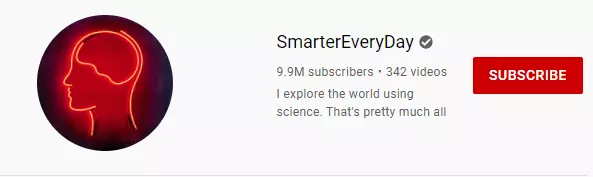
Think about the logos of benevolent brands like YT, Nike, Apple, Mercedes – all of them are simple, thus very easy to recall.
Headshot
If your profile features one individual as the “star”, a headshot is expected your best deal. A perfect headshot can help make your page seem alluring and subjective.
For example, Neil Patel’s profile picture is a professional headshot.
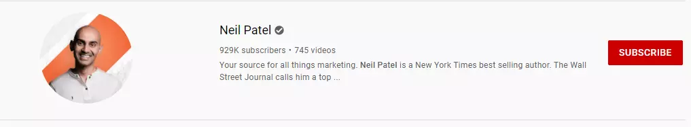
And don’t be afraid to represent your personality in your headshot, like Paul Taylor, the multilingual comedian.
A Graphic
Some channels use a graphic that imitates their videos as their profile Icon. This can work, but it’s complex.
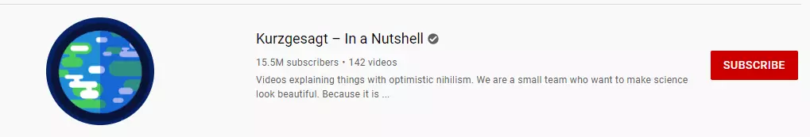
The visual has to converse your profile’s topic in an exclusive way.
Browse other Channels
If your page is about travel, follow similar profiles and check out how they are designing their profiles, do they have an attention-grabbing profile icon?
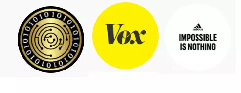
Collect the top 10 logos and think how to create a profile picture corresponding to your content. Then, sketch your icon out on paper
Browse Free Logo Templates Online
There are many websites that provide logo templates for design stimulation. You can take advantage of logo for YouTube channel free.
Services that are available for you to make the best icon as thinkable.
They allow you to pick a logo template and design it nevertheless, if you want, you can do modifications like changing the size. The prospects are endless, so do not be anxious that your logo will not turn our right the first time. You can also leverage GIMP, which is a free image management program you can download online. This is analogous to Photoshop without the cumbersome price tag.
Then you can upload your icon in transparent format or vector and you are all done! Your channel art is significant for growing your subscriber base and continuing to divert your viewers towards your page again and again.
In fact, creating a profile picture on sites like Youidraw.com or Logaster.com (We will talk about it later) is somewhat that should not take more of your time.
All you need to do is pick an icon concept and make some small vicissitudes to it so that it would match your profile better. You can include your YT username, change the colours of the icon, etc.
Use as few components as conceivable
When it comes to crafting an eye-catching and memorable design, austereness is everything. Avoid encumbering your icon with too many information. Two or three origins, your profile name, and your motto (non-compulsory) will be more than adequate.
Position judiciously
Take the time to find the accurate place for each component on your design. A prudently thought-out lock-up can be a mammoth factor in your page’s success.
Blank space
Leave white space amongst and around the rudiments to make your design look clean and easy to read.
Color
YT icons track the same rule as YT thumbnails: if you don’t stand out, you won’t get YouTube views. You cannot use as many colors as possible in your icon. In fact, it is good to use no more than two colors, ensuring they have high enough contrast enough to stand out on both desktop and mobile screens.
Branding
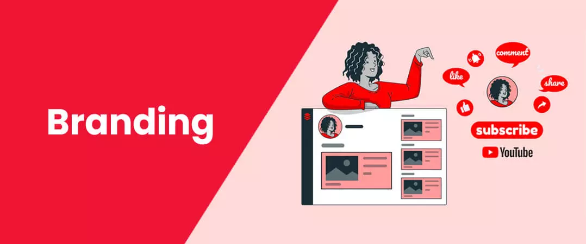
When building an icon for your vlog profile, you must think about other podiums as well. The profile picture is what styles your brand, or in this case your page, identifiable. Therefore, it necessities to look pleasant on other social media websites, as well – Facebook, LinkedIn, Instagram, Twitter, etc.
By using the similar icon on all of your social media profiles, you will be able to build a brand for your page. When individuals see your posts on Facebook, for instance, they will instantaneously know it’s you, this is essential if you plan to go big and ultimately get sponsored.
Sketch your logo with YouTube logo maker
Check out which design components goes well with your content and which ones you think will express the subject to your audience
How to create a YT icon with a free tool?
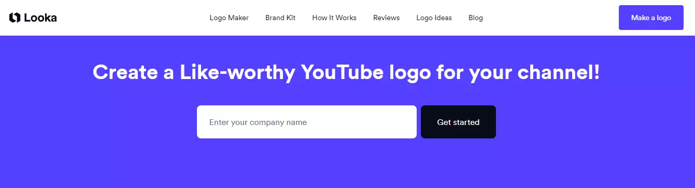
Select
Enter your business/YT icon and select icon styles, colors, fonts, and symbols -- it only takes 5 minutes! Their AI-powered logo maker will use your inspiration when producing icon options.
Analysis
You’ll be accessible with numerous of custom logo mock-ups grounded on your predilections. Select your favourites and preview how they look on mobile, desktop, T-shirts, business cards, product case and more.
Faultless
Use the logo editor to perfect your design and make your vision look great. You can easily change colors, fonts, layouts, and spacing, no extravagant design skills required!
How to create logo for YouTube channel using logaster?
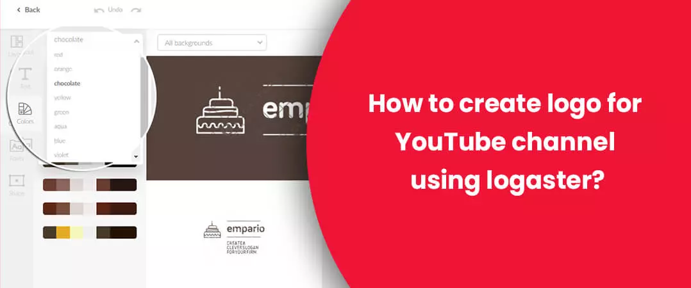
Click “Create Logo” and begin with Step 1.
Step 1. Enter name
Provide your YouTube channel name. As frequently the logo can be used as a watermark on your videos at once being a tool of promotion and heightening traffic to your profile.
Step 2. Stipulate the subject of your videos
Accordingly, the service will produce for you the most proper YT profile picture.
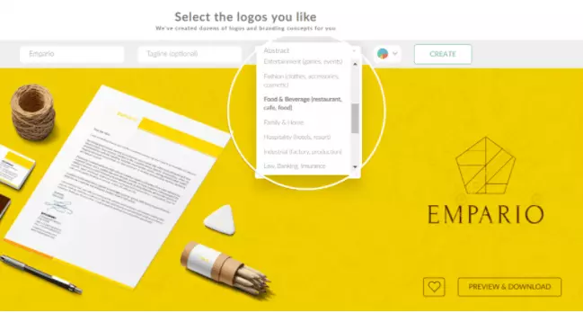
Step 3. Select logo
Pick the logo you like from the recommended ones and click “Preview and Download” to save the logo in your account and/or continue to purchase.
Step 4. Edit logo
All recommended logos are ready for downloading. Nevertheless, if you want to edit some elements of your favourite logo: font, color, size, location, etc., click on “Edit logo”.
Step 5. Save and download a logo
The logotype is all set. If you are assured of it, then it’s time for procurement, if not just save the logo, think over the design and come back to editing. Moreover, you can “try on” the logo by downloading it for free in a small resolution.
I hope you found this as a useful guide to know, how to Create & Change your YT profile picture in 2021.
Feel free to share!